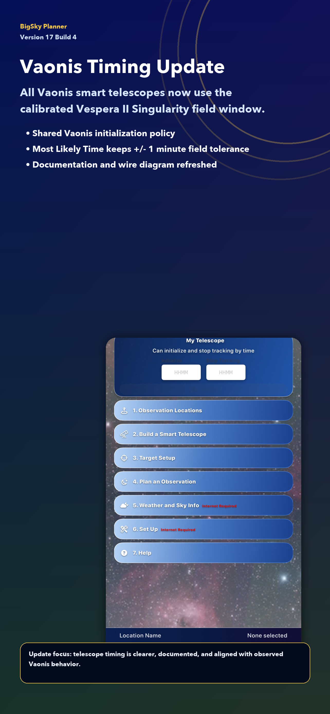
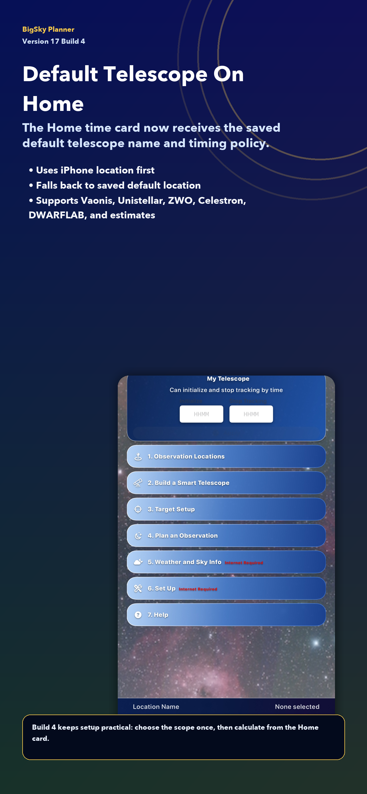
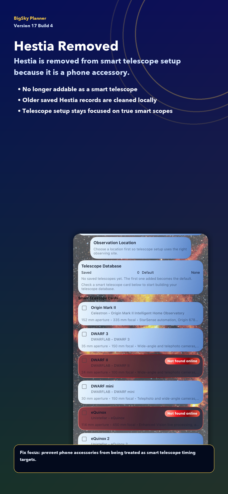
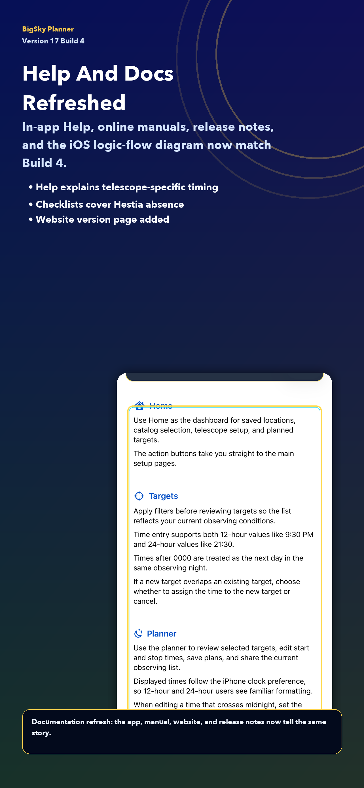
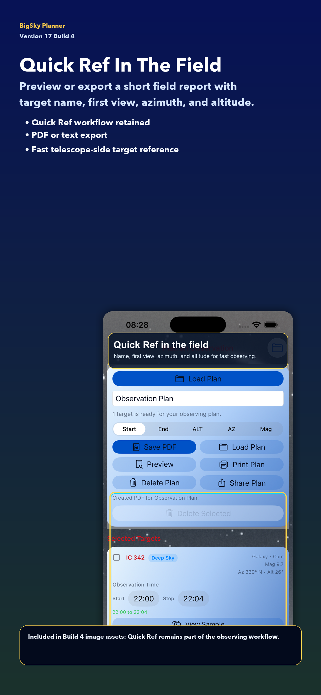
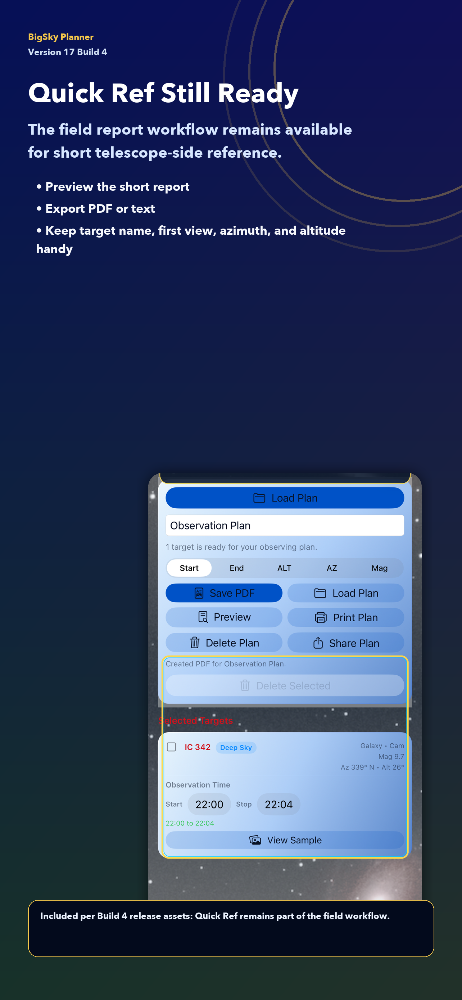
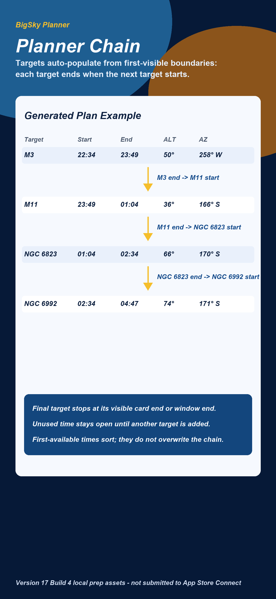
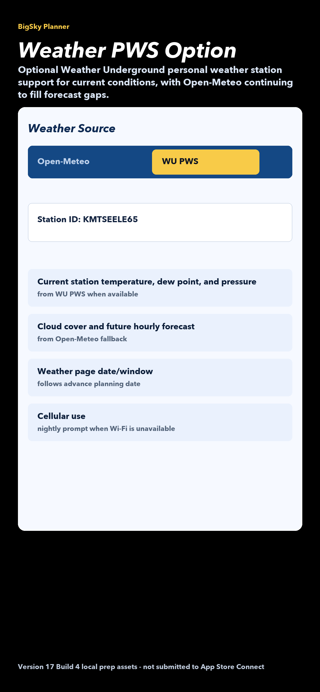
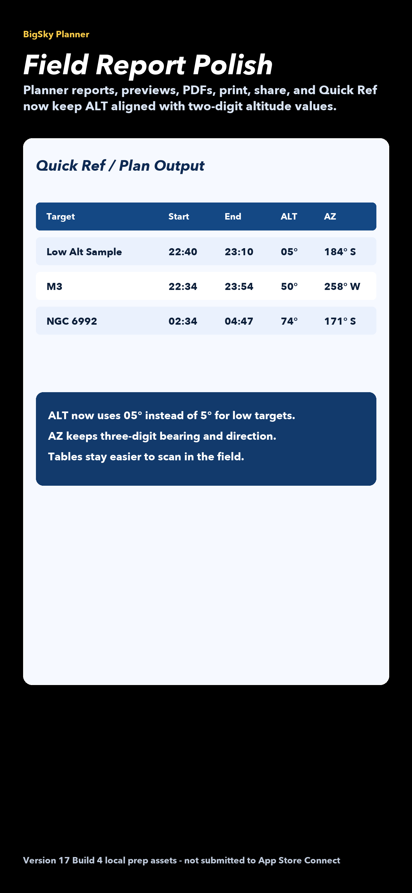

What's New
BigSky Planner Version 18 build 1 supersedes the held Version 17 build 4 release. It keeps the Version 18 planning workflow and adds a sharper smart telescope timing model plus a clearer planner chain. The Home timing card now follows the saved default telescope, uses the iPhone location first, and documents the active timing policy in Help and release materials. Planner rows now auto-populate as a visibility-based target chain: each target ends when the next starts, and the final target ends at the earlier of its visible card end or the capture-window end.
Updates:
- Home timing now receives the saved default telescope name and timing policy.
- Current iPhone location is used first for telescope initialization and stop-tracking calculations.
- All Vaonis smart telescopes use the calibrated Vespera II Singularity field window.
- Default telescope save prompts can return directly to Home Initialization Time.
- Planner target chains auto-populate from the ordered target list, with target end times becoming the next target start.
- Weather Setup can optionally use a Weather Underground PWS station ID for current observations while Open-Meteo fills unsupported forecast data.
- GPS-captured locations can resolve the coordinate back into address fields when iOS supplies a placemark.
- In-app Help, online manuals, PDF manuals, QA checklist, release notes, and the iOS wire diagram were refreshed.
Fixes:
- Hestia is removed from smart telescope setup because it is a phone accessory, not a true smart telescope.
- Older saved Hestia records are cleaned from local telescope storage.
- Telescope page observation-location card now lists only the location name.
- Home timing no longer briefly fills from the saved location while waiting for iPhone GPS timing.
- Target database updates now show the large-dataset warning before the download starts.
- Checked and planned targets stay available when returning to Targets, changing filters, or switching database/type choices.
- Planner reports pad ALT values to two digits for cleaner preview, share, PDF, print, and Quick Ref output.
- Vaonis timing documentation no longer describes the calibration as Vespera-II-only behavior.
Revision Details
Telescope Timing
- Vaonis: shared calibrated Vespera II Singularity window, including the practical display offsets tested against observed Vaonis behavior.
- Unistellar: visible-star orientation estimate.
- ZWO Seestar: GoTo readiness estimate.
- Celestron: conservative plate-solving readiness estimate.
- DWARFLAB and unconfirmed models: visible-star readiness estimate.
Planning And Field Workflow Carried Forward From Version 18
- Future-night planning from setup and Home.
- Common Databases filters for curated object families.
- Star and multiple-star target support in the bundled local catalog.
- Multiple Clear Sky azimuth/altitude openings.
- Mixed object-type plans without losing checked targets.
- Target end-time propagation into the next target start time.
- Planner Fill Gaps suggestions with Sample preview.
- Quick Ref preview/export for short field use.
- Updated in-app Help and manual screenshots.
Planner Chain Logic
- The first target uses its selected or first usable start time.
- Each non-final target end time is the next target start time.
- When the user edits a target end time, that end becomes the next visible target start and the remaining chain ripples forward.
- The final target ends at its visible card end or the capture-window end, whichever comes first.
- First-available target times still help sort candidates, but they no longer overwrite an already built user chain.
Weather, Location, And Database Updates
- Weather Underground PWS can be selected as an optional current-observation source by station ID.
- Open-Meteo remains the fallback source for unsupported cloud and forecast rows.
- GPS location capture can fill address fields from iOS reverse geocoding.
- Target database updates warn before starting because the dataset may be large.
Build 1 Images

Vaonis timing update.

Default telescope timing on Home.

Hestia removed from smart telescope setup.

Help and docs refreshed.

Quick Ref release image.

Quick Ref remains available for field use.

Planner chain: target end becomes next start.

Optional PWS weather source with Open-Meteo fallback.

Two-digit ALT formatting for field reports.